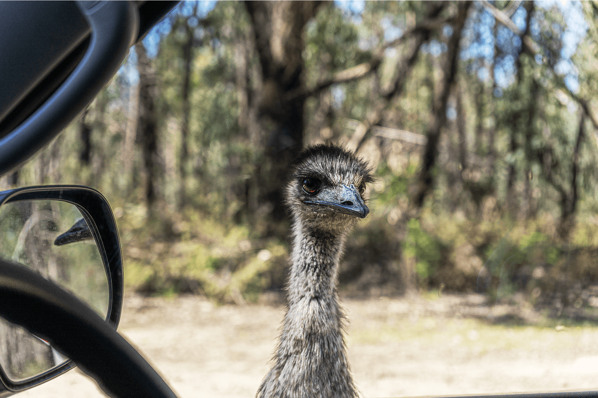
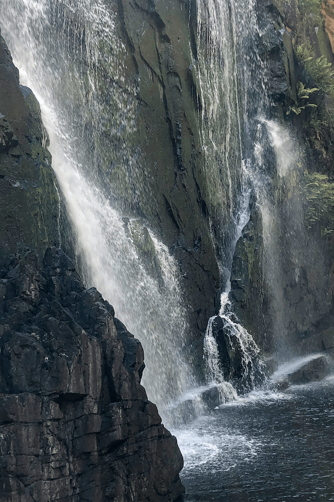
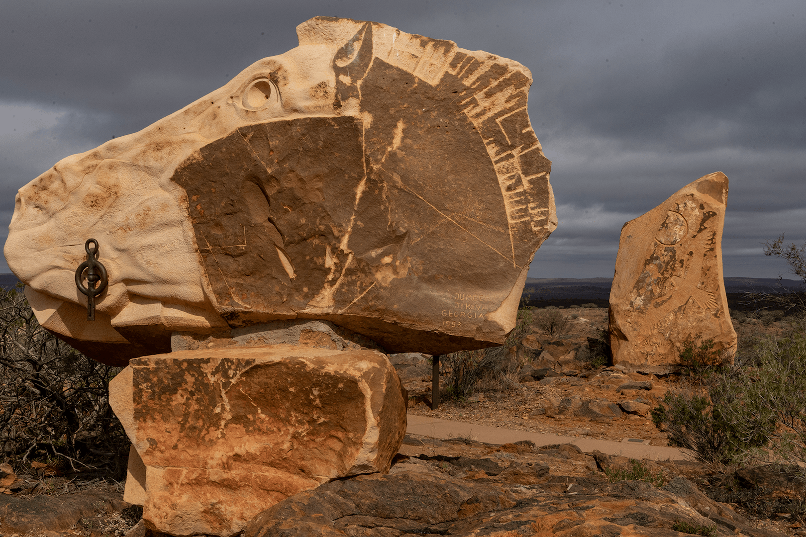
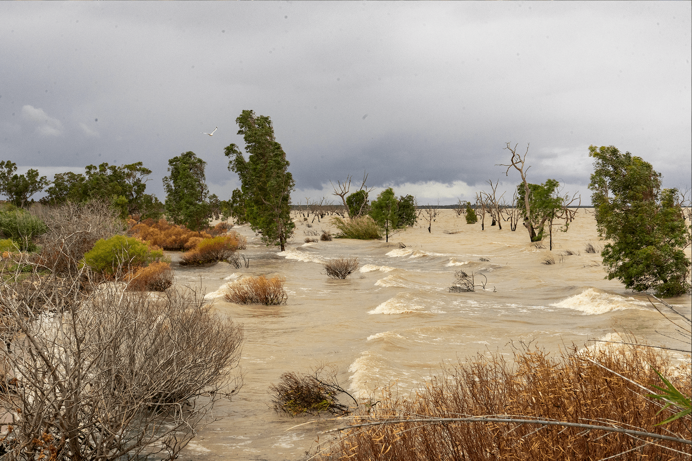
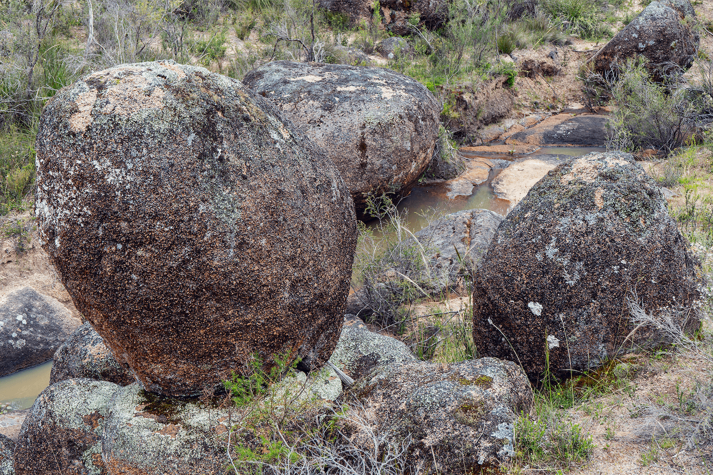
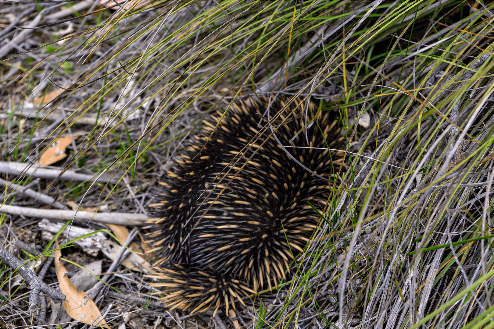
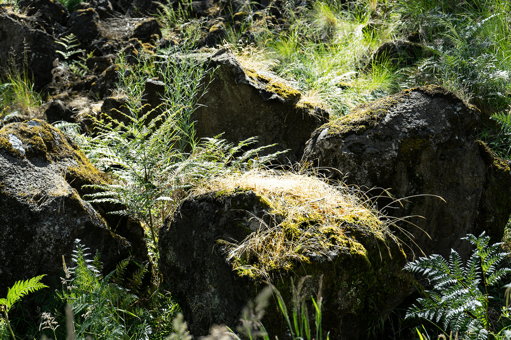
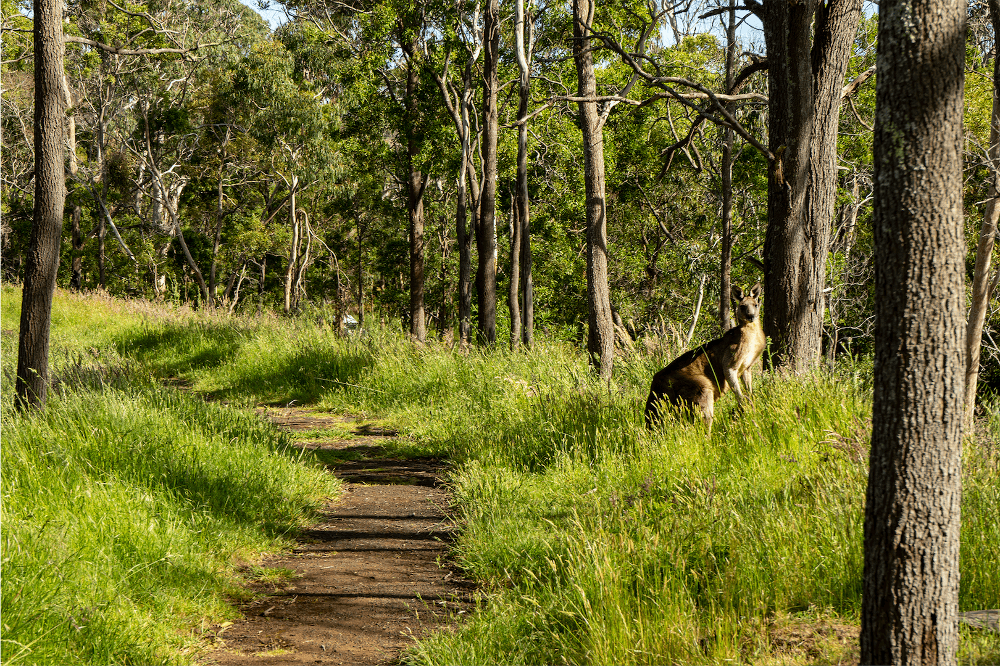
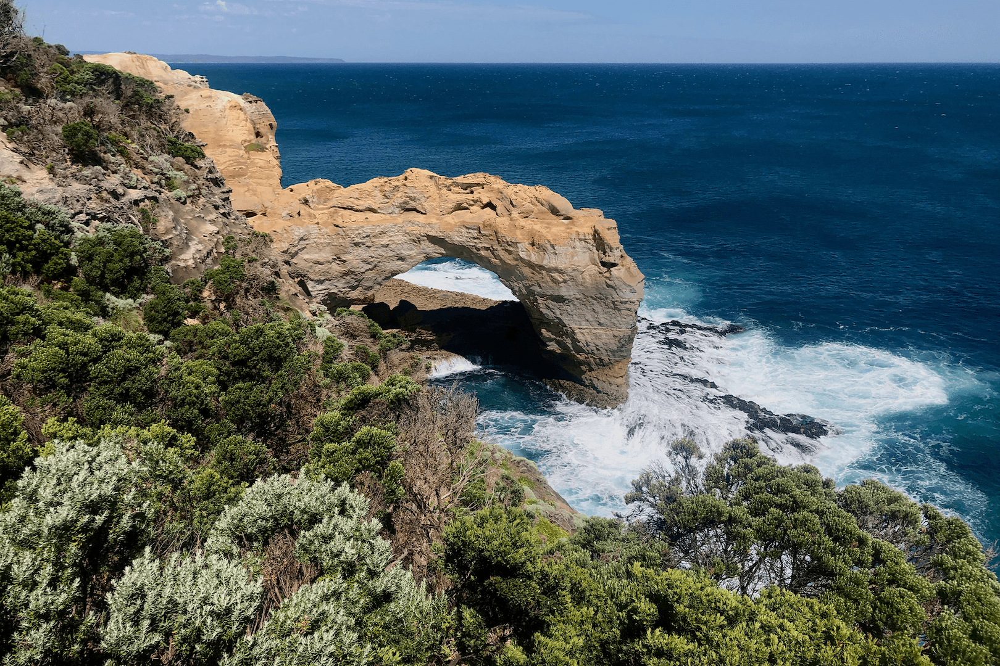

Photostory
Walking in Western Victoria and SW New South Wales
November 2021
This collection is a photo record of a 3 week adventure around western Victoria and briefly into SW NSW. We left the day after Melbourne’s lock down ended. Our cleverly outfitted camper van, the Toyota Hiace/Hyatt is compact and efficient. It carries everything we need and settles into a night at a campsite within 10 minutes. However, the 2wd VanGo does not always travel into state or national parks easily. The fear of getting stuck in sand, or mud, or rattled to pieces by rough corrugated roads is real. ‘Ultimate Campsites’ Australia by Penny Watson and ‘Top Walks in Australia’ by Melanie Ball, online reviews and government warnings determined our camping and hiking choices.
The Australian Landscape wears beautifully. Every location shows centuries of wind, water, and sand shaping its surface. I include a close up from each location for a deeper look and sometimes an animal if I get lucky.
The Northern Grampians, Gariward, Victoria
Gariward, north-west of Melbourne was our first stop. Discovering Mackenzie Falls, the hike that guaranteed falling water, year round, was dramatic. The ancient rock backdrops to both Mackenzie Falls and Fish Falls tell an ancient story.





Travelling further north in Gariward, to Hollow Mountain and down a rain-soaked sandy road, we found Gunlgurn Manja Shelter (Hands of Young People) an Aboriginal rock painting behind a strong protective fence. The child-sized hand prints are from many generations on hard quartz sandstone. The two traditional clans in this area are the Djab Warring and Jardwajali. After a well intentioned start to climb up the rocks of Hollow Mountain a deluge sent us back to the shelter of VanGo and to a secure bitumen road.


Wandering through the Victorian Mallee
The Mallee is a Eucalpyt with a gnarly root, no trunk and branches stemming from the root with leaves. It is also a term for a specific location and a desert landscape. We first walked in Wyperfeld National Park and later to Hattah-Kulkyne mallee region. Imagine yellow or red sand dunes, well adapted desert flora and long vistas under vast blue skies.


Hattah-Kulkyne, Victoria
The Living Desert State Park, NSW
North of Broken Hill, NSW, the Living Desert is stunning. Sandstone sculptures sit on top of a hill in a vibrant desert. Australian and international artists were invited to put their mark on large chunks of sandstone transported from an area two hours away. The collection (called a symposium) created a monumental hilltop overlooking the wide flat desert. A magical place.



Menindee Lakes, NSW
Again a vast fresh water lake (usually dry) fed by the Darling River from rain in QLD and northern NSW. It is regularly drained for farm irrigation. In 2019, a severe drought caused the Darling to dry up, and this lake was a smelly puddle from rotting fish and pesticide runoff. Today and for perhaps a year or more the Menindee lakes are full and vibrant with fish and abundant breeding birdlife.



Bailey Rocks, Dergholm State Park, Victoria
State Parks are large protected areas of often reclaimed and regenerating land. Bailey Rocks are preserved within the park. Ancient boulders of granite lay exposed in a short shallow valley. These formations (fifty million years) are much older than our Ontario Rathbun Lake granite which was formed approximately two million years ago.




Mount Eccles, Budj Nim National Park, Victoria
Great excitement when we realized the low groan/squeal/snort was a koala, sleeping and eating in a Manna Gum just above the camper van. Later, we saw a big male chase a female to the end of a branch bellowing and grunting. Today’s hike explored the results of an active volcano 8000 years ago. The land was reclaimed from farmers in 1960. A wander through the lava canal, around the crater’s edge and to the top of the volcano revealed its history. However, the undergrowth was dense and wet with hints of a rainforest including the hitchhiking and hungry leeches.





Great Ocean Road and Walk, Victoria
Water is Australia’s Achilles heel. On our short circuit, roads were closed from floods after years of drought. Yet great volumes of sea water crash against its shoreline. The country has adapted over millennia. Time and the elements have shaped and re-shaped the largely dry surfaces of this very old island continent. The western Victorian coastline from Portland to Aire River is spectacular in its sculpted erosion.



Aire River to Castle Cove and Back, Victoria
The Great Ocean Walk is notable. Walking through dense windswept coastal undergrowth on a well cleared path prepares you for visual splendour with the first clearing view of the great Southern Ocean. Quickly rising to the right are eroded honeycomb, sandstone cliffs. This hike had just re-opened after a large section broke off, toppling down across the path and towards the ocean. Castle Cove is a pristine experience. Turn left, instead of following the trail, down a sinking sand path to an isolated beach and its grey, smooth rock faces. What a privilege to savour an Australian beach alone!